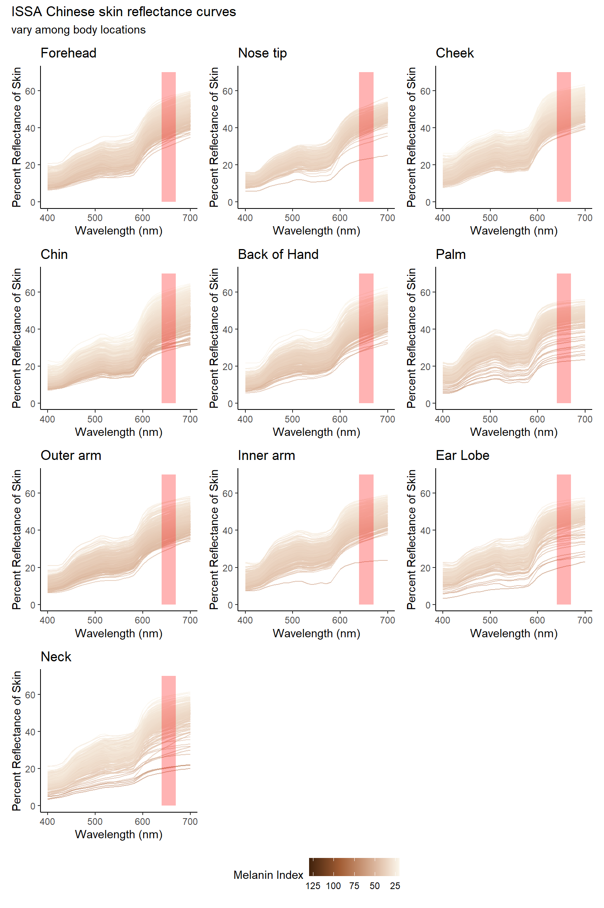
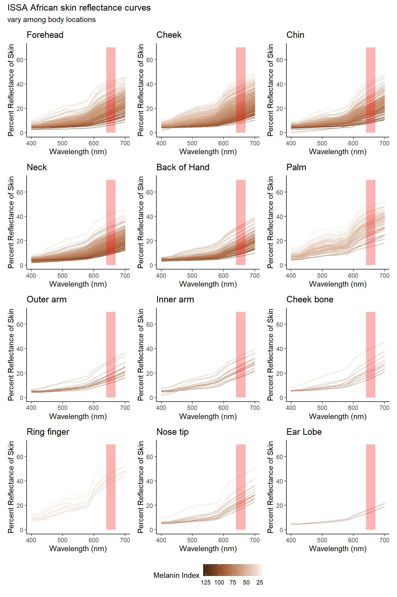
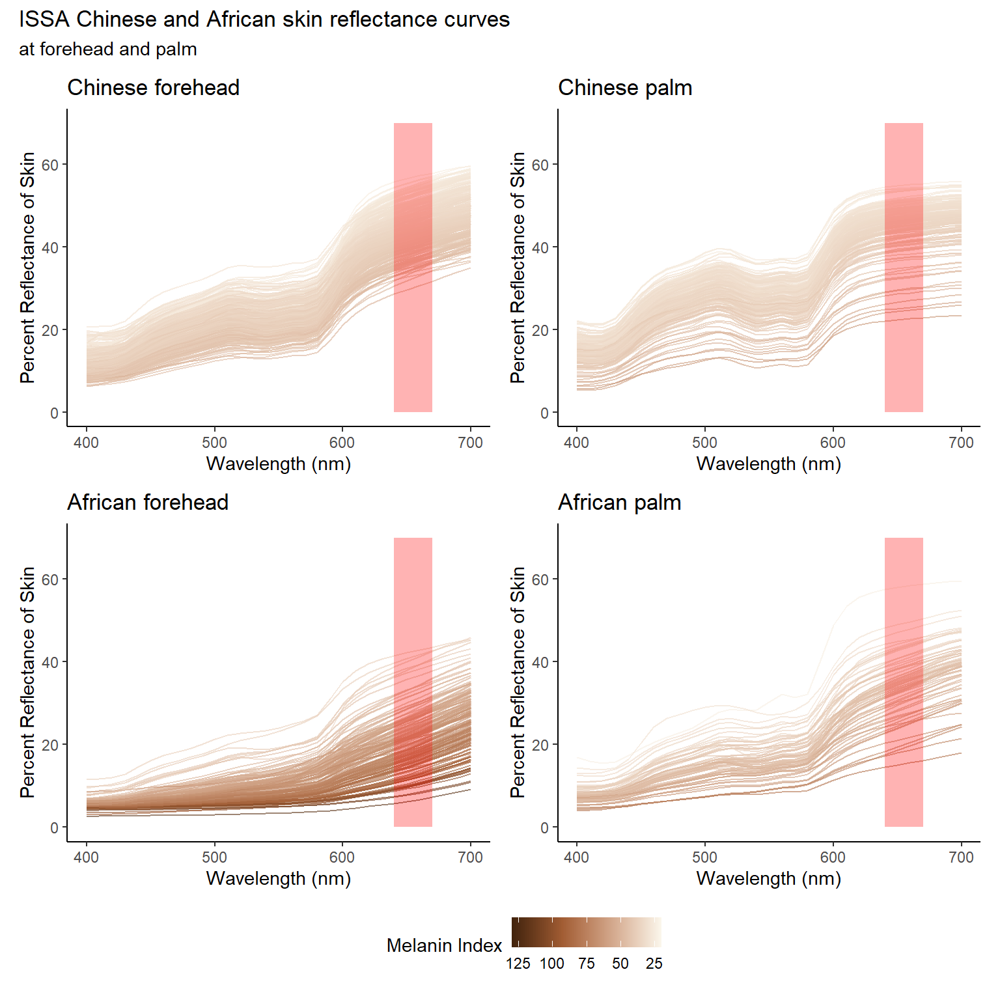
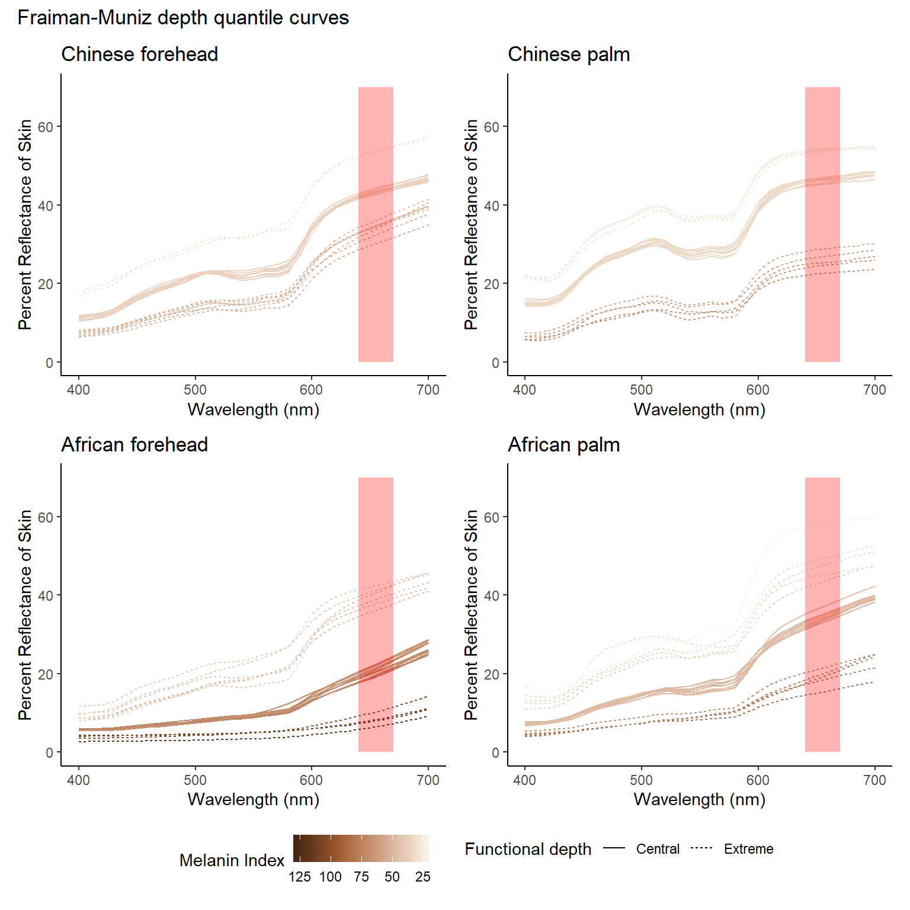
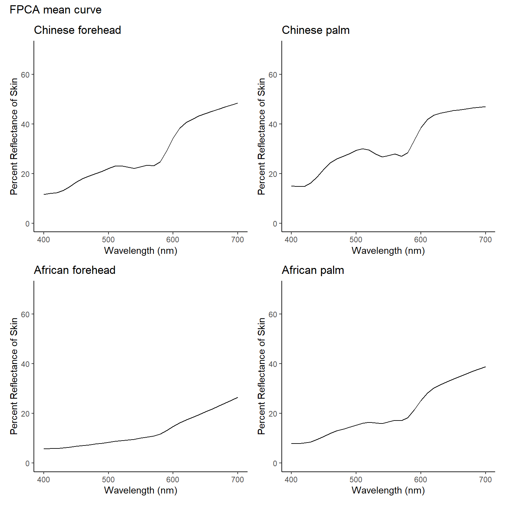
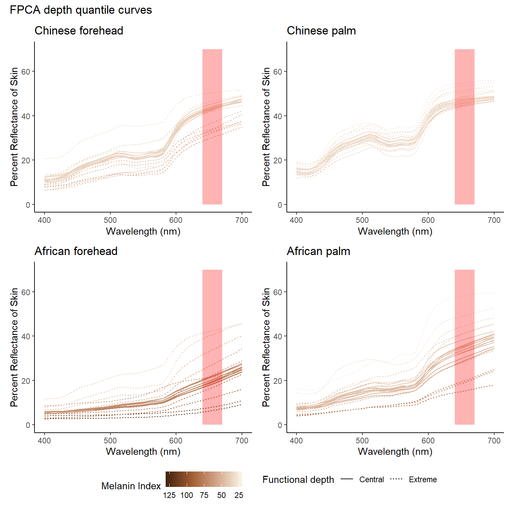

Last updated: 2025-09-03
Checks: 7 0
Knit directory: SkinSpectrum/
This reproducible R Markdown analysis was created with workflowr (version 1.7.1). The Checks tab describes the reproducibility checks that were applied when the results were created. The Past versions tab lists the development history.
Great! Since the R Markdown file has been committed to the Git repository, you know the exact version of the code that produced these results.
Great job! The global environment was empty. Objects defined in the global environment can affect the analysis in your R Markdown file in unknown ways. For reproduciblity it’s best to always run the code in an empty environment.
The command set.seed(20250822) was run prior to running
the code in the R Markdown file. Setting a seed ensures that any results
that rely on randomness, e.g. subsampling or permutations, are
reproducible.
Great job! Recording the operating system, R version, and package versions is critical for reproducibility.
Nice! There were no cached chunks for this analysis, so you can be confident that you successfully produced the results during this run.
Great job! Using relative paths to the files within your workflowr project makes it easier to run your code on other machines.
Great! You are using Git for version control. Tracking code development and connecting the code version to the results is critical for reproducibility.
The results in this page were generated with repository version 893dd34. See the Past versions tab to see a history of the changes made to the R Markdown and HTML files.
Note that you need to be careful to ensure that all relevant files for
the analysis have been committed to Git prior to generating the results
(you can use wflow_publish or
wflow_git_commit). workflowr only checks the R Markdown
file, but you know if there are other scripts or data files that it
depends on. Below is the status of the Git repository when the results
were generated:
Ignored files:
Ignored: .Rhistory
Ignored: .Rproj.user/
Note that any generated files, e.g. HTML, png, CSS, etc., are not included in this status report because it is ok for generated content to have uncommitted changes.
These are the previous versions of the repository in which changes were
made to the R Markdown (analysis/depth.Rmd) and HTML
(docs/depth.html) files. If you’ve configured a remote Git
repository (see ?wflow_git_remote), click on the hyperlinks
in the table below to view the files as they were in that past version.
| File | Version | Author | Date | Message |
|---|---|---|---|---|
| Rmd | 893dd34 | Junhui He | 2025-09-03 | wflow_publish("analysis/depth.Rmd") |
The International Skin Spectra Archive (ISSA) offers a detailed collection of spectral and colorimetric data for human skin, encompassing 15,256 records from 2,113 subjects. This data spans from 2012 to 2024 and originates from eleven datasets curated by international laboratories across eight countries: the UK, Spain, China, Japan, Pakistan, Thailand, Iraq, and Saudi Arabia. Each dataset follows a standardised measurement protocol to maintain data consistency.
In the ISSA dataset, individual records provide extensive details including record number, data origin, subject identification, and skin type—categorised by ethnicity, gender, age, and body location. The dataset also includes detailed information on the measurement instruments used, such as type, specular component inclusion, wavelength range and interval.
Alongside spectral data, each sample also contains CIE colorimetric data, including tristimulus values, xy chromaticity coordinates, CIELAB parameters, etc., based on the CIE 1931 standard colorimetric observer and the CIE standard illuminant D65.
The datasheet arranges data across columns labelled A to BQ:
In this analysis, we aim to explore the relationship of skin reflectance among various body locations. For simplicity, here we take Chinese and Africans as the study subjects. The Chinese and African skin reflectance curves in different body locations are shown as followings:


According to the reflectance plots above, the skin reflectance curves at many body locations looks very similar, and some locations contain only a few, or even no, curves. To enable meaningful comparisons, we focus on the following samples, with their sizes given in parentheses:
Chinese forehead (370), Chinese palm (201);
African forehead (143), African palm (65).
The corresponding reflectance curves are shown below:

Functional depth is a center-outward score to rank curves from “central” to “outlying”. The depth of a curve is high if it stays with the bulk of the sample across grid points, and low if it wanders to extremes.
There are many different types of functional depth. Let us consider three common depth notions—Fraiman–Muniz (FM) depth, and Projection-type depth. Consider a functional data set consists of \(n\) curves evaluated on grid points \(t\in T\), denoted as \(\{x_i(t),~t\in T\}_{1\leq i \leq n}\).
We compute the functional depth of the skin reflectance curves and rank them according to their depth. Curves with higher depth values are considered central, while those with lower depth values are regarded as extreme. We then present the 10 curves with the highest depth and the 10 curves with the lowest depth, respectively.

To capture the global shape of skin reflectance curves, we calculate the functional principal components to serve as basis curves, and obtain the corresponding PC scores. Our subsequent analysis is then carried out using these scores.

Remark: It is hard to interpret functional principal components directly.

Our next step is to develop a functional classifier that can determine whether a new curve is realistic, that is, whether it belongs to the underlying distribution.
R version 4.4.2 (2024-10-31 ucrt)
Platform: x86_64-w64-mingw32/x64
Running under: Windows 10 x64 (build 19045)
Matrix products: default
locale:
[1] LC_COLLATE=Chinese (Simplified)_China.utf8
[2] LC_CTYPE=Chinese (Simplified)_China.utf8
[3] LC_MONETARY=Chinese (Simplified)_China.utf8
[4] LC_NUMERIC=C
[5] LC_TIME=C
time zone: America/New_York
tzcode source: internal
attached base packages:
[1] splines stats graphics grDevices utils datasets methods
[8] base
other attached packages:
[1] ddalpha_1.3.16 geometry_0.5.2 sfsmisc_1.1-22
[4] robustbase_0.99-4-1 class_7.3-22 fda.usc_2.2.0
[7] mgcv_1.9-1 nlme_3.1-166 fda_6.3.0
[10] deSolve_1.40 fds_1.8 RCurl_1.98-1.17
[13] rainbow_3.8 pcaPP_2.0-5 MASS_7.3-61
[16] openxlsx_4.2.8 gridExtra_2.3 paletteer_1.6.0
[19] ggmulti_1.0.7 ggridges_0.5.6 ggbeeswarm_0.7.2
[22] patchwork_1.3.0 scales_1.3.0 knitr_1.49
[25] lubridate_1.9.4 forcats_1.0.0 stringr_1.5.1
[28] dplyr_1.1.4 purrr_1.0.2 readr_2.1.5
[31] tidyr_1.3.1 tibble_3.2.1 ggplot2_3.5.1
[34] tidyverse_2.0.0 workflowr_1.7.1
loaded via a namespace (and not attached):
[1] bitops_1.0-9 rematch2_2.1.2 rlang_1.1.4 magrittr_2.0.3
[5] git2r_0.35.0 compiler_4.4.2 getPass_0.2-4 callr_3.7.6
[9] vctrs_0.6.5 kSamples_1.2-12 pkgconfig_2.0.3 fastmap_1.2.0
[13] labeling_0.4.3 magic_1.6-1 utf8_1.2.4 promises_1.3.2
[17] rmarkdown_2.29 tzdb_0.4.0 pracma_2.4.4 ps_1.8.1
[21] xfun_0.49 cachem_1.1.0 jsonlite_1.8.9 SuppDists_1.1-9.9
[25] later_1.4.1 parallel_4.4.2 cluster_2.1.6 R6_2.5.1
[29] bslib_0.8.0 stringi_1.8.4 jquerylib_0.1.4 Rcpp_1.0.13-1
[33] iterators_1.0.14 hdrcde_3.4 httpuv_1.6.15 Matrix_1.7-1
[37] timechange_0.3.0 tidyselect_1.2.1 abind_1.4-8 rstudioapi_0.17.1
[41] yaml_2.3.10 doParallel_1.0.17 codetools_0.2-20 processx_3.8.4
[45] lattice_0.22-6 ks_1.15.1 withr_3.0.2 evaluate_1.0.1
[49] zip_2.3.1 mclust_6.1.1 pillar_1.9.0 whisker_0.4.1
[53] KernSmooth_2.23-24 foreach_1.5.2 generics_0.1.3 rprojroot_2.0.4
[57] hms_1.1.3 munsell_0.5.1 glue_1.8.0 tools_4.4.2
[61] fs_1.6.5 mvtnorm_1.3-2 grid_4.4.2 colorspace_2.1-1
[65] beeswarm_0.4.0 vipor_0.4.7 cli_3.6.3 fansi_1.0.6
[69] gtable_0.3.6 DEoptimR_1.1-4 sass_0.4.9 digest_0.6.37
[73] farver_2.1.2 htmltools_0.5.8.1 lifecycle_1.0.4 httr_1.4.7